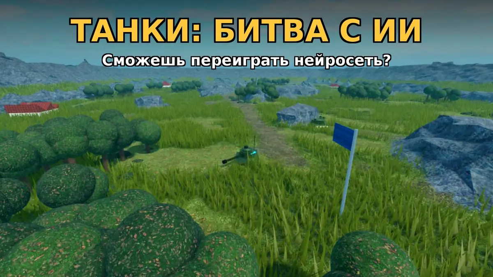
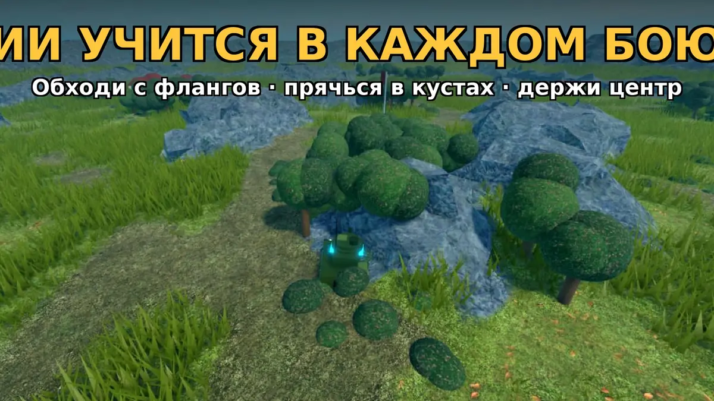
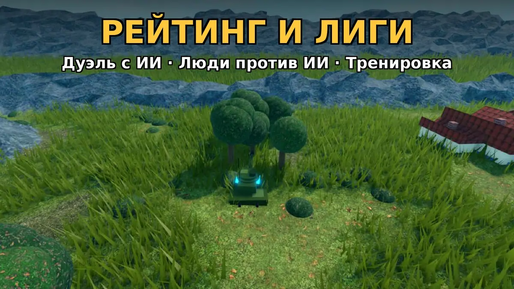

Танки: Битва с ИИ — игра в Roblox
Сможешь переиграть нейросеть? Танковые бои отрядами на больших картах против ИИ, который учится в каждом бою.

Об игре «Танки: Битва с ИИ»
Танковые бои отрядами на картах Поля, Город, Пустыня и Зима — малых, средних и больших. Победа — уничтожить всех врагов или набрать 100 очков, удерживая точку в центре карты.
Ваш соперник — ИИ, который учится в каждом бою. Правила одинаковые: ИИ видит только то, что видит его команда, и стреляет с тем же разбросом. Победите его — ваш стиль станет «Тенью», и ИИ будет учиться играть против вас.
Тактика решает: бейте в борт и корму, прячьтесь в кустах, останавливайтесь для точного выстрела.

Что есть в игре
- Режимы: дуэль с ИИ, люди против ИИ (до 5 игроков), тренировка с ботами, просмотр боёв ИИ
- 4 танка: Лёгкий, Средний, Тяжёлый, Истребитель
- Рейтинг и лиги от Бронзы до Легенды, зал славы «Победили ИИ»
- Уровни, задания, ежедневные награды, окраска и флажки
- Управление: W/S — газ, A/D — поворот, мышь — прицел, ЛКМ — огонь; на телефоне — джойстик

Как начать играть
- Нажмите «Играть в Roblox» — откроется страница игры.
- Войдите в Roblox (бесплатно) и нажмите кнопку запуска.
- Играйте на компьютере или телефоне.
Частые вопросы
Честно ли играет ИИ?
Да: правила одинаковые, ИИ видит только то, что видит его команда, и стреляет с тем же разбросом.
Можно играть с друзьями против ИИ?
Да, в режиме «Люди против ИИ» — до 5 игроков.